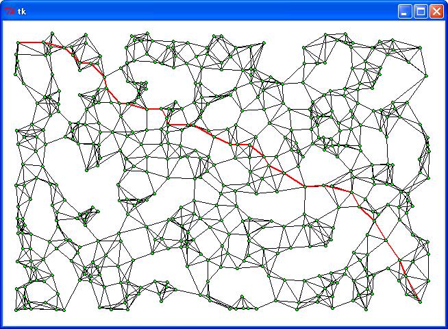
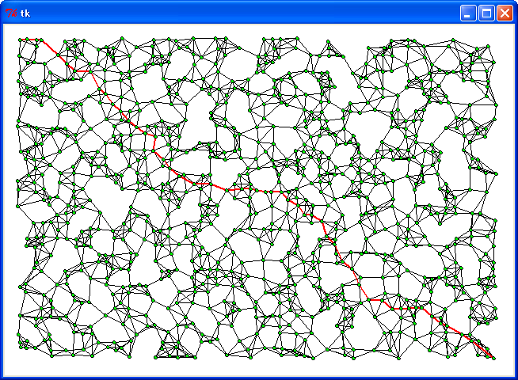
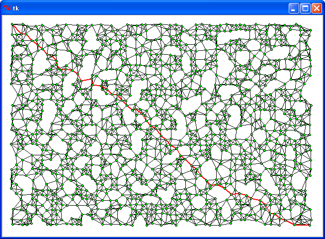
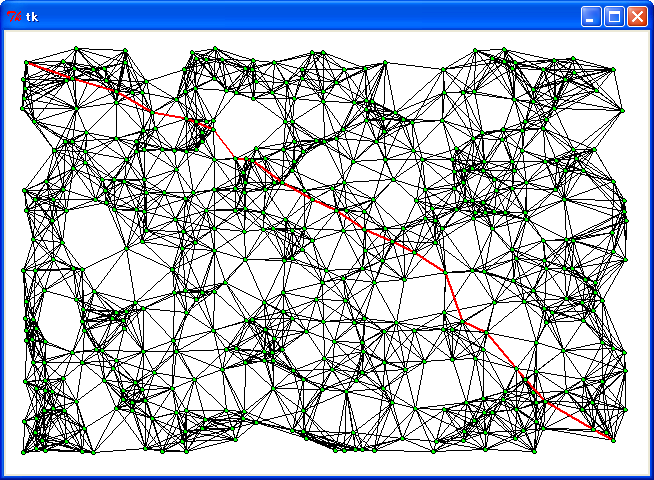
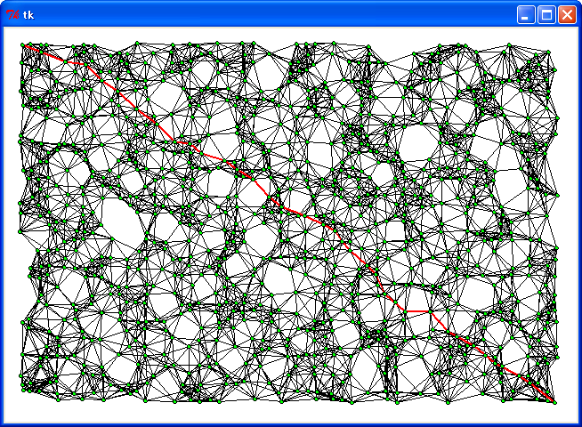
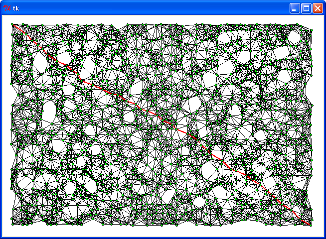
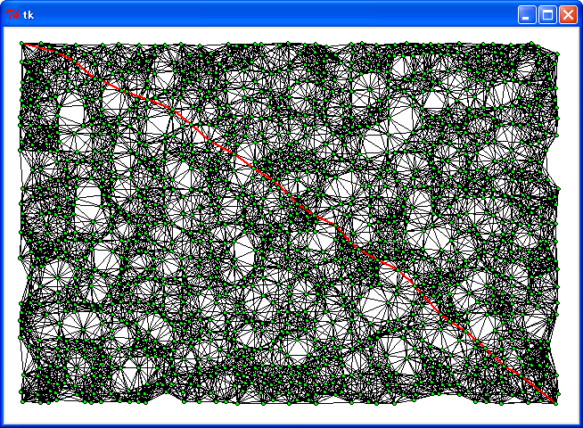

はじめに
「ヒープ (heap) 」の続きです。今回は最短経路を求める「ダイクストラ (Dijkstra) のアルゴリズム」にプライオリティキューを適用し、処理の高速化に挑戦してみましょう。
●最短経路の探索
ダイクストラのアルゴリズムは拙作のページ 欲張り法 で詳しく説明しました。ダイクストラのアルゴリズムを使うと、出発点から全ての頂点に対する最小コストの経路を求めることができます。この問題は「出発点が一つの最短経路問題」と呼ばれています。ゴールが指定されいる場合、つまり 2 つの頂点間の最短経路を求めるだけでよければ、「A* アルゴリズム」を用いることができます。A* アルゴリズムは拙作のページ ヒューリスティック探索 で詳しく説明しています。
ダイクストラのアルゴリズムを単純な方法で実装した場合、頂点の個数を N とすると、その実行時間は N2 に比例します。辺の総数 E が N2 よりもずっと少ない場合、プライオリティキューを使うことで実行速度を改善することができます。そこで、簡単な例題として辺のコストを距離とし、左上にある頂点から右下にある頂点までの最短経路を求めて、実行速度がどの程度改善されるか確かめてみましょう。
●隣接行列の作成
データは前回乱数で作成したもの (500 個, 1000 個, 1500 個) を利用します。このデータから隣接行列と隣接リストを作成します。次のリストを見てください。
リスト : 隣接行列の作成
def make_adj(n, ps):
size = len(ps)
dt = [[INF] * size for _ in xrange(size)]
adj = [[] for _ in xrange(size)]
for i in xrange(size):
tmp = [(j, dis(ps[i], ps[j])) for j in xrange(size)]
tmp.sort(lambda x, y: x[1] - y[1])
# 短いほうから n 個隣接行列に登録
for j in xrange(1, n + 1):
k, d = tmp[j]
if dt[i][k] == INF:
dt[i][k] = d
dt[k][i] = d
adj[i].append(k)
adj[k].append(i)
return dt, adj
dt が隣接行列で、adj が隣接行列です。INF (999999999) は接続されていないことを表すデータです。ps は頂点の位置 (タプル) を格納した配列です。関数 make_adj は、頂点 i に近い頂点を n 個選び、それを dt と adj に追加します。n 本以上の辺が追加される頂点もありますが、簡単な例題なのでこれで良しとしましょう。なお、make_adj の実行にはけっこう時間がかかるので注意してください。
●プログラムの作成
それではプログラムを作りましょう。ダイクストラのアルゴリズムを単純な方法で実装すると次のようになります。
リスト : 最短経路の探索
# 経路を作る
def make_path(start, n, prev):
if start == n:
return [start]
else:
return make_path(start, prev[n], prev) + [n]
# ダイクストラ法 (単純版)
def dijk(start, goal, size):
cost = [INF] * size
prev = [None] * size
visited = [False] * size
prev[start] = start
cost[start] = 0
s = start
for _ in xrange(size):
min_cost = INF
next = -1
visited[s] = True
# 頂点の選択
for i in xrange(size):
if visited[i]: continue
if dt[s][i] < INF:
d = cost[s] + dt[s][i]
if d < cost[i]:
cost[i] = d
prev[i] = s
if min_cost > cost[i]:
min_cost = cost[i]
next = i
s = next
#
return make_path(start, goal, prev)
visited は選択した頂点を記憶するために使用します。cost は出発点から各頂点への最小コストを格納します。出発点から各頂点への経路を再現するために配列 prev を用意します。この配列には一つ手前の頂点を格納します。prev に格納された頂点を逆にたどっていけば、各頂点の経路を求めることができます。あとは for ループの中で最小コストの頂点を選び、cost と prev を更新するだけです。
●ダイクストラのアルゴリズムの改良
次はプライオリティキューを使ってダイクストラのアルゴリズムを改良してみましょう。最初に、頂点とそのコストを格納するクラスを定義します。
リスト : 頂点とコストの定義
class VCost:
def __init__(self, p, cost):
self.p = p
self.cost = cost # 整数値
def decrease_key(self, x):
self.cost -= x
def __cmp__(x, y):
return x.cost - y.cost
def __hash__(self):
return id(self)
クラス VCost のインスタンス変数 p が頂点を表す番号、cost がコストを表します。キー値の減算を行わない場合、メソッド decrease_key() と __hash__() は必要ありません。
プライオリティキューを使ったプログラムは次のようになります。
リスト : 最短経路の探索 (改良版１)
def dijk1(start, goal, size):
cost = [INF] * size
prev = [None] * size
visited = [False] * size
cost[start] = 0
#
pq = pqueue.PQueue()
pq.push(VCost(start, cost[start]))
i = 0
while i < size:
v = pq.pop()
if visited[v.p]: continue
visited[v.p] = True
for x in adj[v.p]:
if cost[x] > v.cost + dt[v.p][x]:
cost[x] = v.cost + dt[v.p][x]
prev[x] = v.p
pq.push(VCost(x, cost[x]))
i += 1
#
return make_path(start, goal, prev)
最初に start の地点を選び、それをキューに追加します。それから while ループで size 個の頂点を選択します。まず、キューからデータ v を取り出し、それが未選択の頂点であることを確認します。次に、隣接リストから隣の頂点 x を求め、cost[x] よりも v.cost + dt[v.p][x] が小さければ、cost[x] と prev[x] の値を更新し、キューに新しいデータを追加します。最後に、関数 make_path で最短経路を作成して返します。
decrease_key を使う場合は次のようになります。
リスト ; 最短経路の探索 (改良版２)
def dijk2(start, goal, size):
cost = [VCost(i, INF) for i in xrange(size)]
prev = [None] * size
#
cost[start].cost = 0
pq = pqueuedk.PQueue()
pq.push(cost[start])
for _ in xrange(size):
v = pq.pop()
for x in adj[v.p]:
if cost[x].cost == INF:
cost[x].cost = v.cost + dt[v.p][x]
prev[x] = v.p
pq.push(cost[x])
elif cost[x].cost > v.cost + dt[v.p][x]:
d = cost[x].cost - (v.cost + dt[v.p][x])
prev[x] = v.p
pq.decrease_key(cost[x], d)
#
return make_path(start, goal, prev)
最初に VCost のインスタンスを生成して、配列 cost に格納します。そして、start 地点のインスタンスをキューに登録します。次の for ループでキューからデータを取り出し、隣接している頂点 x の cost と prev を更新します。cost[x].cost が INF と等しい場合、cost[x] はキューに登録されていないので、cost と prev を更新してからキューに登録します。
cost[x].cost よりも v.cost + dt[v.p][x] が小さい場合は、cost[x].cost と prev[x] の値を更新します。そして、decrease_key() でキューにあるデータの優先順位を変更します。最初にインスタンスをすべてキューに登録してもいいのですが、実行時間が遅くなったので今回のようにプログラムしました。
あとのプログラムは簡単なので説明は割愛します。詳細は プログラムリスト１ をお読みください。
●実行結果
それでは実行してみましょう。乱数で適当に作成したデータ (500 個, 1000 個, 1500 個) で 1 頂点につながる辺の本数を 5, 10, 15 と指定した場合、結果は次のようになりました。
頂点 = 500, 辺 = 5
頂点 = 1000, 辺 = 5
頂点 = 1500, 辺 = 5
頂点 = 500, 辺 = 10
頂点 = 1000, 辺 = 10
頂点 = 1500, 辺 = 10
 頂点 = 500, 辺 = 15
頂点 = 500, 辺 = 15
 頂点 = 1000, 辺 = 15
頂点 = 1000, 辺 = 15
頂点 = 1500, 辺 = 15
表 ; 実行結果 (単位 秒)
辺 = 5
個数 : 距離 : dijk : dijk1 : dijk2
-----+------+-------+-------+-------
500 : 765 : 0.075 : 0.032 : 0.031
1000 : 789 : 0.299 : 0.068 : 0.068
1500 : 779 : 0.667 : 0.104 : 0.156
辺 = 10
個数 : 距離 : dijk : dijk1 : dijk2
-----+------+-------+-------+-------
500 : 725 : 0.075 : 0.045 : 0.038
1000 : 739 : 0.298 : 0.097 : 0.083
1500 : 735 : 0.668 : 0.146 : 0.178
辺 = 15
個数 : 距離 : dijk : dijk1 : dijk2
-----+------+-------+-------+-------
500 : 707 : 0.076 : 0.054 : 0.043
1000 : 726 : 0.299 : 0.112 : 0.092
1500 : 729 : 0.671 : 0.168 : 0.193
dijk : ダイクストラのアルゴリズム (単純版)
dijk1 : ダイクストラのアルゴリズム (改良版１)
dijk2 : ダイクストラのアルゴリズム (改良版２)
実行環境 : Windows XP, celeron 1.40 GHz, Python 2.7
単純な実装方法 (dijk) よりもプライオリティキューを使った改良版 (dijk1, dijk2) のほうが速くなりました。前回の Euclidean MST と違って、今回は辺の本数が少ないので、頂点の個数を増やすと decrease_key() を使った dijk2 の方が dijk1 よりも遅くなりました。ダイクストラのアルゴリズムの場合、decrease_key() を使わなくてもプライオリティキューだけで十分な効果が得られるようです。
●A* アルゴリズムによる探索
始点と終点が決まっていれば、最短経路は A* アルゴリズムで高速に求めることができます。拙作のページ ヒューリスティック探索 で作成したプログラムを改造すると簡単に作成することができます。次のリストを見てください。
リスト : A* アルゴリズムによる探索
OPEN = 1
CLOSE = 0
# 局面の定義
class State:
def __init__(self, v, p, g, kind = OPEN):
self.v = v # 頂点
self.p = p # 前の局面
# self.d start からの距離
# self.cost コスト
if p is None:
self.d = 0 # start
else:
self.d = p.d + dt[p.v][v]
self.cost = self.d + dis(point_table[v], point_table[g])
self.kind = kind
def __cmp__(x, y):
return x.cost - y.cost
# 経路の生成
def make_path_astar(state):
path = []
while state is not None:
path.append(state.v)
state = state.p
return path
# 探索
def a_star_search(start, goal, size):
q = pqueue.PQueue()
visited = [None] * size
a = State(start, None, goal)
q.push(a)
visited[start] = a
while not q.isEmpty():
a = q.pop()
if a.kind == CLOSE: continue # 廃棄オブジェクトのチェック
for x in adj[a.v]:
b = visited[x]
if b:
# 訪問済みの頂点
l = a.d + dt[a.v][x]
if b.d > l:
# 更新する
if b.kind == OPEN:
b.kind = CLOSE # 廃棄する
b = State(x, a, goal) # 新しいオブジェクト
visited[x] = b # 書き換え
else:
b.p = a
b.d = l
b.cost = b.d + dis(point_table[x], point_table[goal])
b.kind = OPEN
# キューに追加
q.push(b)
else:
# 未訪問の頂点
b = State(x, a, goal)
if x == goal:
return make_path_astar(b)
q.push(b)
visited[x] = b
# a の子ノードは展開済み
a.kind = CLOSE
A* アルゴリズムは、現在地点に到達するまでのコストと、そこからゴールまでに推定されるコストが必要になります。今回の場合、ゴールまでの推定コストを現在地点からゴールまでの直線距離にすると、A* アルゴリズムは正しく動作します。あとは ヒューリスティック探索 のプログラムとほとんど同じです。
●実行結果 (2)
それでは実行してみましょう。
表 : 実行結果 (単位 秒)
辺 = 5
個数 : 距離 : dijk : dijk1 : dijk2 : A*
-----+------+-------+-------+-------+-------
500 : 765 : 0.075 : 0.032 : 0.031 : 0.020
1000 : 789 : 0.299 : 0.068 : 0.068 : 0.055
1500 : 779 : 0.667 : 0.104 : 0.156 : 0.082
辺 = 10
個数 : 距離 : dijk : dijk1 : dijk2 : A*
-----+------+-------+-------+-------+-------
500 : 725 : 0.075 : 0.045 : 0.038 : 0.023
1000 : 739 : 0.298 : 0.097 : 0.083 : 0.047
1500 : 735 : 0.668 : 0.146 : 0.178 : 0.049
辺 = 15
個数 : 距離 : dijk : dijk1 : dijk2 : A*
-----+------+-------+-------+-------+-------
500 : 707 : 0.076 : 0.054 : 0.043 : 0.018
1000 : 726 : 0.299 : 0.112 : 0.092 : 0.026
1500 : 729 : 0.671 : 0.168 : 0.193 : 0.042
dijk : ダイクストラのアルゴリズム (単純版)
dijk1 : ダイクストラのアルゴリズム (改良版１)
dijk2 : ダイクストラのアルゴリズム (改良版２)
A* : A* アルゴリズム
実行環境 : Windows XP, celeron 1.40 GHz, Python 2.7
A* アルゴリズムが一番速くなりました。頂点の個数が増えても A* アルゴリズムならば高速に解くことができます。
なお、これらの結果は M.Hiroi のコーディング、実行したマシン、プログラミング言語などの環境に大きく依存しています。また、これらの環境だけではなく、データの種類によっても実行時間はかなり左右されます。興味のある方は、いろいろなデータをご自分の環境で試してみてください。
●プログラムリスト１
# coding: utf-8
#
# edijk.py : ユークリッド距離によるダイクストラ法
#
# Copyright (C) 2012 Makoto Hiroi
#
import sys
import math
import time
import pqueue
import pqueuedk
from Tkinter import *
# 無限大
INF = 999999999
# 標準入力よりデータを読み込む
def read_data():
buff = []
for a in sys.stdin:
b = a.split()
buff.append((int(b[0]), int(b[1])))
return buff
# 距離の計算
def dis(p1, p2):
dx = p1[0] - p2[0]
dy = p1[1] - p2[1]
return int(math.sqrt(dx * dx + dy * dy) + 0.5)
# 隣接行列の作成
def make_adj(n, ps):
size = len(ps)
dt = [[INF] * size for _ in xrange(size)]
adj = [[] for _ in xrange(size)]
for i in xrange(size):
tmp = [(j, dis(ps[i], ps[j])) for j in xrange(size)]
tmp.sort(lambda x, y: x[1] - y[1])
# 短いほうから n 個隣接行列に登録
for j in xrange(1, n + 1):
k, d = tmp[j]
if dt[i][k] == INF:
dt[i][k] = d
dt[k][i] = d
adj[i].append(k)
adj[k].append(i)
return dt, adj
# 経路の長さ
def path_length(path):
n = 0
for i in xrange(1, len(path)):
n += dis(point_table[path[i-1]], point_table[path[i]])
return n
##
## 頂点とコスト
##
class VCost:
def __init__(self, p, cost):
self.p = p
self.cost = cost # 整数値
def decrease_key(self, x):
self.cost -= x
def __cmp__(x, y):
return x.cost - y.cost
def __hash__(self):
return id(self)
##
## ダイクストラ法
##
# 経路を作る
def make_path(start, n, prev):
if start == n:
return [start]
else:
return make_path(start, prev[n], prev) + [n]
def dijk(start, goal, size):
cost = [INF] * size
prev = [None] * size
visited = [False] * size
prev[start] = start
cost[start] = 0
s = start
for _ in xrange(size):
min_cost = INF
next = -1
visited[s] = True
# 頂点の選択
for i in xrange(size):
if visited[i]: continue
if dt[s][i] < INF:
d = cost[s] + dt[s][i]
if d < cost[i]:
cost[i] = d
prev[i] = s
if min_cost > cost[i]:
min_cost = cost[i]
next = i
s = next
#
return make_path(start, goal, prev)
# PQueue を利用する
def dijk1(start, goal, size):
cost = [INF] * size
prev = [None] * size
visited = [False] * size
cost[start] = 0
#
pq = pqueue.PQueue()
pq.push(VCost(start, cost[start]))
i = 0
while i < size:
v = pq.pop()
if visited[v.p]: continue
visited[v.p] = True
for x in adj[v.p]:
if cost[x] > v.cost + dt[v.p][x]:
cost[x] = v.cost + dt[v.p][x]
prev[x] = v.p
pq.push(VCost(x, cost[x]))
i += 1
#
return make_path(start, goal, prev)
# decrease_key を利用する
def dijk2(start, goal, size):
cost = [VCost(i, INF) for i in xrange(size)]
prev = [None] * size
#
cost[start].cost = 0
pq = pqueuedk.PQueue()
pq.push(cost[start])
for _ in xrange(size):
v = pq.pop()
for x in adj[v.p]:
if cost[x].cost == INF:
cost[x].cost = v.cost + dt[v.p][x]
prev[x] = v.p
pq.push(cost[x])
elif cost[x].cost > v.cost + dt[v.p][x]:
d = cost[x].cost - (v.cost + dt[v.p][x])
prev[x] = v.p
pq.decrease_key(cost[x], d)
#
return make_path(start, goal, prev)
##
## A* アルゴリズムによる探索
##
OPEN = 1
CLOSE = 0
# 局面の定義
class State:
def __init__(self, v, p, g, kind = OPEN):
self.v = v # 頂点
self.p = p # 前の局面
# self.d start からの距離
# self.cost コスト
if p is None:
self.d = 0 # start
else:
self.d = p.d + dt[p.v][v]
self.cost = self.d + dis(point_table[v], point_table[g])
self.kind = kind
def __cmp__(x, y):
return x.cost - y.cost
# 経路の生成
def make_path_astar(state):
path = []
while state is not None:
path.append(state.v)
state = state.p
return path
# 探索
def a_star_search(start, goal, size):
q = pqueue.PQueue()
visited = [None] * size
a = State(start, None, goal)
q.push(a)
visited[start] = a
while not q.isEmpty():
a = q.pop()
if a.kind == CLOSE: continue # 廃棄オブジェクトのチェック
for x in adj[a.v]:
b = visited[x]
if b:
# 訪問済みの頂点
l = a.d + dt[a.v][x]
if b.d > l:
# 更新する
if b.kind == OPEN:
b.kind = CLOSE # 廃棄する
b = State(x, a, goal) # 新しいオブジェクト
visited[x] = b # 書き換え
else:
b.p = a
b.d = l
b.cost = b.d + dis(point_table[x], point_table[goal])
b.kind = OPEN
# キューに追加
q.push(b)
else:
# 未訪問の頂点
b = State(x, a, goal)
if x == goal:
return make_path_astar(b)
q.push(b)
visited[x] = b
# a の子ノードは展開済み
a.kind = CLOSE
##
## 実行
##
point_table = read_data()
point_table.sort(lambda x, y: dis(x, (0,0)) - dis(y, (0,0)))
point_size = len(point_table)
dt, adj = make_adj(5, point_table)
s = time.clock()
path = dijk(0, point_size - 1, point_size)
print path_length(path)
print time.clock() - s
s = time.clock()
path = dijk1(0, point_size - 1, point_size)
print path_length(path)
print time.clock() - s
s = time.clock()
path = dijk2(0, point_size - 1, point_size)
print path_length(path)
print time.clock() - s
s = time.clock()
path = a_star_search(0, point_size - 1, point_size)
print path_length(path)
print time.clock() - s
##
## 経路の表示
##
#
def draw_adj(size):
for i in xrange(size - 1):
for j in xrange(i + 1, size):
if dt[i][j] < INF:
x0, y0 = point_table[i]
x1, y1 = point_table[j]
id = c0.create_line(x0, y0, x1, y1)
# path の表示
def draw_path(path):
x0, y0 = path[0]
for i in xrange(1, len(path)):
x1, y1 = path[i]
c0.create_line(x0, y0, x1, y1, fill = "red", width = 2)
x0, y0 = x1, y1
# 都市の表示
def draw_point():
for x, y in point_table:
c0.create_oval(x - 2, y - 2, x + 2, y + 2, fill = "green")
max_x = max(map(lambda x: x[0], point_table)) + 20
max_y = max(map(lambda x: x[1], point_table)) + 20
root = Tk()
c0 = Canvas(root, width = max_x, height = max_y, bg = "white")
c0.pack()
draw_adj(point_size)
draw_path(map(lambda x: point_table[x], path))
draw_point()
root.mainloop()